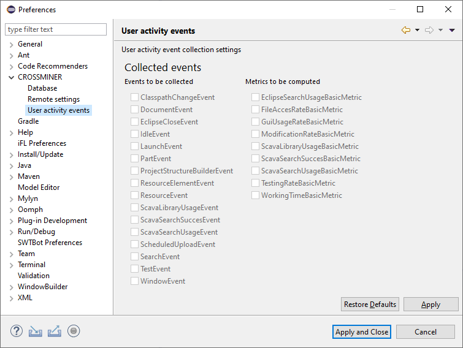

In the User activity events tab you can customize which events are you want
to collect or which metric are you want to compute. If you disable an event which is required to calculate a metric, hence that
metric won't be computed. If the user monitoring is disabled, these buttons are inactive.

Event and Metric settings